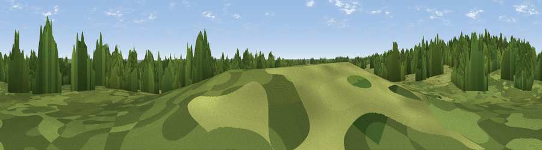

Yards Hill
#44843 in England · top 90% of its area beats it · near MarchwoodWhere it is
The exact computed spot (SU 36961 09704). Click the marker for map links.
The view, rendered

A 360° render of this exact spot computed from the terrain model, tree cover and land cover — summer colours, afternoon light, calibrated against photographs of famous viewpoints. Real trees, hedges and buildings will differ in detail.
The panorama
Grey silhouette: terrain skyline in each direction (720 bearings, Earth curvature and refraction included). Dashed green: skyline with trees (+15 m) and buildings (+8 m) as obstacles. Blue strip: how far the ground is visible on each bearing.
Where the view opens
Wedge length = distance to the farthest visible ground on that bearing (vegetation-aware). Rings at 10, 25 and 50 km.
What fills the view
69% woodland · 25% grassland · 5% built-up ·
Angular shares of the visible panorama (visual magnitude), not map area. Landscape diversity 0.36 (0–1 Shannon).
Key numbers
More beautiful places nearby
The staircase of upgrades: each row has a higher view potential than everything closer. Driving times are estimates from straight-line distance, calibrated against real road routing — check an actual route before setting out.
| Place | Direction | Drive | Score |
|---|---|---|---|
| Windmoor Hill | ESE · 3 km | ~7 min | 25.4 |
| Matley Ridge | WSW · 5 km | ~11 min | 31.7 |
| Tatchbury Mount | NW · 6 km | ~13 min | 40.3 |
| Viewpoint near Emery Down | W · 8 km | ~16 min | 44.9 |
| Viewpoint near Upton | N · 9 km | ~18 min | 46.3 |
| Viewpoint near Bramshaw | WNW · 12 km | ~23 min | 46.6 |
| Viewpoint near Gurnard | SSE · 18 km | ~31 min | 48.4 |
| Violet Hill | NNE · 18 km | ~31 min | 55.7 |
50.88564, -1.47594 · source: osm peak · position refined by local search. Computed location — check access rights before visiting.